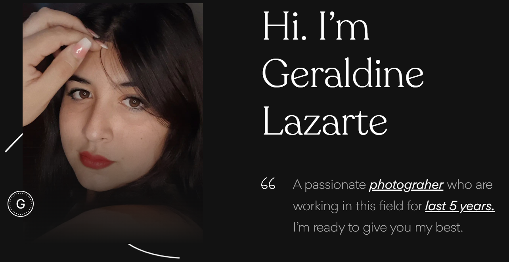

A client, Geraldine, a talented photographer specializing in portraits and event photography, contacted me with the hope of having a website that reflected the essence and beauty of her work. Geraldine wanted a site that would not only showcase her impressive portfolios, but also capture the emotion and story behind each image.
I got to work, starting with a meeting to understand their vision and style. I designed an elegant and minimalist interface that would highlight their photographs, using a soft color palette and refined fonts to complement the aesthetics of their works. I implemented an interactive gallery that would allow visitors to explore their projects in a fluid and pleasant way.
After our meetings, I spent time reflecting and brainstorming ideas. I wanted to create a design that was not only visually appealing, but would also emotionally resonate with site visitors.
The next step was to sketch out wireframes and sketches of the website structure. These sketches included the layout of the photo gallery and the main navigation. I shared these sketches with Geraldine to get her feedback and make sure we were aligned with her vision.

With intuitive navigation and a responsive design, Geraldine's website became a perfect reflection of her art, helping her attract new clients and show the world her passion for photography.
Irish Smith
Geraldine's new website is simply spectacular. Each photograph tells a story and the presentation is impeccable. Browsing its galleries is like embarking on a journey through nature. I'm impressed!
Reply
Christine Stewart
I love how Geraldine's page captures the essence of her work. Photos look even more vivid and detailed on the web, and navigation is so intuitive that it's a pleasure to explore each section. Congratulations on a job well done.
Reply
Chintan Patel
Geraldine's website is a work of art in itself. The colors, design and layout of the photos perfectly reflect his love for nature. Also, the blog section is very inspiring and educational. A wonderful place
Reply
John Doe
The user experience on Geraldine's website is exceptional. From the first page to the last, everything is designed to highlight your incredible photography talent. The interactive galleries are a delight to explore.
Reply
Ben Afflick
I've followed Geraldine's work for years and her new website takes her portfolio to a whole new level. It is visually attractive and very easy to navigate. The stories behind each photo really come to life here.
Reply
Jean Doe
Geraldine's website is a perfect example of what a professional photography site should be like. It combines beauty and functionality impeccably. Photos load quickly and the image quality is second to none. I love it!
Reply